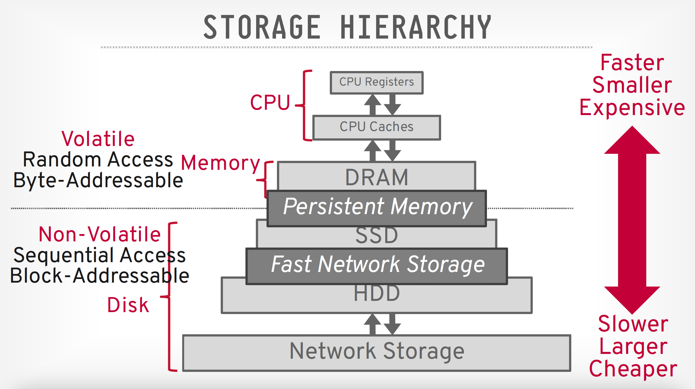
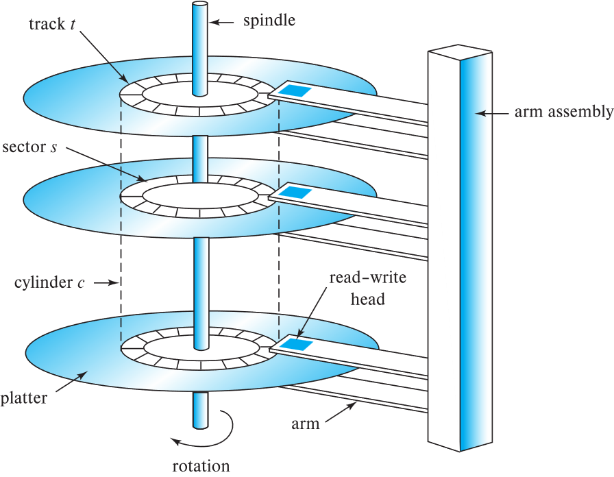

第八章
物理存储系统
chapter 12: Physical Storage System
物理存储介质的分类
-
**存储分类: **
-
**易失性存储 (volatile storage): **
- 断电后内容会丢失.
-
**非易失性存储 (non-volatile storage): **
- 断电后内容依然存在.
- 包括二级存储, 三级存储, 以及带有电池备份的主存储器.
-
**影响选择存储介质的因素: **
-
数据访问速度(speed): 从发出指令到拿到数据需要多长时间.
-
单位数据成本(cost per unit of data): 每 GB 或者 TB 需要花多少钱.
-
可靠性(Relilability): 包括因断电或系统崩溃导致的数据丢失, 以及存储设备的物理损坏.
-
存储层次结构
存储设备层级图:

-
缓存 (cache)
-
主存储器 (main memory)
-
闪存 (flash memory):
- 常用于相机, 智能手机等设备中. 基于闪存实现的存储器有: U盘, 固态硬盘(SSD)等
-
磁盘 (magnetic disk)
-
光盘 (optical disk)
- 包括DVD(digital video disk), 光驱(optical disk jukebox)等
-
磁带 (magnetic tapes)
其中, 存储层级越往上,速度越快, 成本越高, 容量越小, 反之同理.
DB会将经常访问的数据放在上方, 而大量历史数据放在下方
除此之外还可以将存储分为以下几个层级:
-
主存储/一级存储 (Primary storage):
- 速度最快,成本最高
- 具有易失性
- 例如: 缓存, 主存
-
二级存储(Secondary storage)/联机存储 (on-line storage):
- 访问速度适中
-
非易失性
-
例如: 闪存, 磁性硬盘
-
三级存储 (Tertiary storage): 层次结构中的最低级, 非易失性, 访问速度慢.
- 也称为脱机存储 (off-line storage), 常用于归档存储 (archival storage).
- 例如: 磁带, 光盘.
- 磁带: 顺序访问, 单盘容量 1 至 12 TB; 自动磁带库(Jukeboxes)可提供拍字节(PB, 即 1000s TB)级别的存储.
更现代的层级划分:

-
存储接口
-
磁盘接口标准家族:
- SATA (Serial ATA): 串行 ATA; 常见于个人电脑. SATA 3 支持最高 6 Gbps 的传输速度.
- SAS (Serial Attached SCSI): 串行连接 SCSI; 常见于企业级服务器. SAS 3 支持 12 Gbps.
- NVMe (Non-Volatile Memory Express): 非易失性内存主机控制器接口规范; 现代最快的标准, 通过 PCIe 接口连接.
- 优势: 更低的延迟, 更高的传输率.
- 速度: 最高可达 24 Gbps.
-
存储网络架构:
- SAN (存储区域网络): 通过高速网络将大量硬盘连接到多台服务器. 磁盘通常组织在 RAID(冗余磁盘阵列, 用于提速和防灾)中.
- NAS (网络附加存储): 提供文件系统接口的联网存储设备. 解释: 简单说, SAN 像是一个网络上的 "虚拟硬盘", 而 NAS 像是一个网络上的 "共享文件夹".
- Cloud Storage (云存储): 随着互联网发展, 近年来增长迅速.
磁盘
- 磁性硬盘(Magnetic Hard Disk Mechanism)的结构

Platter (盘片): 硬盘里叠在一起的圆形金属片, 表面覆盖磁性材料. 图中显示了三张盘片. 通常 1 到 5 张盘片安装在同一个主轴上.
Spindle (主轴): 盘片中心旋转的轴.
Rotation (旋转): 盘片以高速(如 7200 转/分)不停旋转.
Arm assembly (磁臂组件): 像老式留声机的唱臂, 负责带着磁头来回移动. 所有的磁头跟随同一个磁臂同步移动
Read-write head (读写磁头): 每个盘片的上下表面各有一个磁头, 它们悬浮在高速旋转的盘片表面极近的地方.
- **几何单位定义: **
Track \(t\) (磁道): 盘片表面分为同心圆磁道. 典型硬盘每个表面有 5 万道 10 万个磁道
Sector \(s\) (扇区): 磁道被划分成的小弧段, 称为扇区, 是读写的最小单位. 大小通常为 512 字节.
Cylinder \(c\) (柱面): 所有盘片上具有相同半径的所有磁道的集合(就像一个垂直的圆柱体表面).
- 如何读/写一个扇区?
**寻道(Seek): ** 磁臂摆动, 将磁头定位到正确的磁道上.
**旋转 (Rotation): ** 盘片持续旋转, 直到目标扇区转到磁头下方.
-
磁盘控制器(Disk controller)
是计算机系统与磁盘驱动器硬件之间的接口.
接受高层命令来读写扇区.
启动动作(如将磁臂移动到正确磁道并实际读写数据).
计算并附加校验和 (checksums): 为每个扇区验证读取的数据是否正确. 如果数据损坏, 校验和很可能不匹配.
通过在写入后立即读回扇区来确保写入成功.
执行坏扇区重映射.
-
磁盘性能度量
-
存取时间 (Access time): 从发出读写请求到数据开始传输所花费的时间. 由以下部分组成:
-
寻道时间 (Seek time): 将磁臂重新定位到正确磁道所需的时间.
-
平均寻道时间是坏情况寻道时间的 1/2.
-
典型磁盘上为 4 到 10 毫秒.
-
旋转延迟 (Rotational latency): 等待要访问的扇区旋转到磁头下方所需的时间.
-
典型磁盘(5400 到 15000 转/分)上为 4 到 11 毫秒.
- 平均延迟是上述延迟的 1/2.
总延迟: 取决于磁盘型号, 通常为 5 到 20 毫秒.
-
-
数据传输率 (Data-transfer rate): 从磁盘检索或存储数据的速率.
- 最大速率为 25 到 200 MB/秒, 内圈磁道的速率较低.
影响机械硬盘(HDD / Hard Disk Drive)性能的两大因素就是寻道和旋转两个物理动作, 所以数据库优化的一个主要目的就是减少这种物理寻道时间
- 磁盘块 (Disk block): 存储分配和检索的逻辑单位.
- 通常为 4 到 16 KB.
- 更小的块: 从磁盘传输的次数更多.
- 更大的块: 由于块未填满而浪费的空间更多.
- 顺序访问模式 (Sequential access pattern):
- 连续的请求访问连续的磁盘块.
- 仅在访问第一块时需要寻道.
- 随机访问模式 (Random access pattern):
- 连续的请求访问磁盘上任意位置的块.
- 每次访问都需要寻道.
- 由于大量时间浪费在寻道上, 传输率很低.
- 每秒输入/输出操作数 (IOPS):
- 磁盘每秒能支持的随机块读取数量.
- 当前一代机械硬盘约为 50 到 200 IOPS.
数据库非常在意顺序访问和随机访问的区别. 顺序读取要比随机读取快得多. 而 IOPS 是衡量数据库处理高并发小请求能力的关键指标. HDD 在这一项上表现很弱.
- **平均无故障时间 (MTTF): ** 预期磁盘连续运行而不发生故障的平均时间.
- 通常为 3 到 5 年.
- 新磁盘的故障概率很低, 对应于新磁盘 50 万 到 120 万 小时的 "理论 MTTF".
- 例如: 如果 MTTF 为 120 万小时, 意味着在 1000 个相对较新的磁盘中, 平均每 1200 小时会有一个损坏.
- MTTF 会随着磁盘老化而降低.
MTTF 用于评估系统的可靠性. 虽然时间看上去很久, 但是拥有上万块硬盘的数据中心, 硬盘损坏是每天都会发生的常态, 所以数据库必须要具备数据冗余(如: RAID 或多副本)的能力
磁带
- 磁带(Magnetic Tapes)
- 可存储海量数据并提供高传输率.
- DAT 格式几 GB, DLT 格式 10-40 GB, Ultrium 格式 100 GB+, Ampex 螺旋扫描格式 330 GB.
- 传输率从几 MB/s 到几十 MB/s.
- 磁带本身便宜, 但驱动器(读写机)价格非常高.
- 与磁盘和光盘相比, 存取时间非常慢.
- 局限于顺序访问.
- 某些格式提供较快的寻道(几十秒), 但以降低容量为代价.
- 主要用于备份, 存储不常用的信息, 以及作为系统间传输信息的脱机介质.
- 磁带库 (Jukeboxes) 用于超大容量存储.
- 可达数拍字节(PB, 10151015 字节).
闪存
-
闪存(Flash Storage)
-
NOR 闪存(快, 但贵, 容量小)vs NAND 闪存(容量大, 单位成本低).
-
**NAND 闪存: **
- 广泛用于存储, 比 NOR 闪存便宜.
- 要求 按页读取(每页: 512 字节到 4KB).
- 读取一页需 20 到 100 微秒.
- 顺序读取和随机读取之间差异不大.
- 一页只能写入一次: 必须先擦除才能重新写入.
-
**固态硬盘 (SSD / Solid State Drive): **
使用标准的面相块的磁盘接口, 但在 内部将数据存储在多个闪存设备上. 目前 SSD 几乎全部采用的是 NAND 闪存. 它是一个完整的存储设备. 它除了包含多颗闪存芯片外, 还包含两个至关重要的部分:
主控芯片 (Controller): 相当于 SSD 的 "大脑", 负责管理数据怎么写, 怎么读, 以及执行刚才幻灯片里提到的 "磨损均衡" 和 "重映射".
接口与固件 (Interface & Firmware): 负责让电脑能识别它(比如 SATA 或 NVMe 协议).
SSD 强大的地方在于没有机械寻道延迟, 因此随机访问极快. 但是它有一个物理限制是必须 "先擦后写", 这导致 SSD 写入比读取慢.
- 擦除以 擦除块 (erase block) 为单位进行.
- 耗时 2 到 5 毫秒.
- 一个擦除块通常为 256 KB 到 1 MB(包含 128 到 256 页).
- 重映射 (Remapping): 将逻辑页地址映射到物理页地址, 以避免等待擦除.
- 闪存转换表 (Flash translation table) 跟踪映射关系.
- 同时也存储在闪存页的标签字段中.
- 重映射由 闪存转换层 (FTL) 执行.
-
在 10 万 到 100 万 次擦除后, 擦除块会变得不可靠且无法使用.
- 磨损均衡 (wear leveling): 均匀分布写入压力.
-
SSD 的性能指标
-
每秒随机读/写次数:
- 典型的 4 KB 读取: 每秒 10,000 次(10,000 IOPS).
- 典型的 4 KB 写入: 40,000 IOPS.
- SSD 支持并行读取:
- 典型的 4 KB 读取:
- 在 SATA 上使用 32 路并行请求(QD-32)可达 100,000 IOPS.
- 在 NVMe PCIe 上使用 QD-32 可达 350,000 IOPS.
- 顺序读写的数据传输率:
- SATA3 约为 400 MB/sec, NVMe PCIe 约为 2 到 3 GB/sec. (注: 手写补充提示 PCIe 5.0 可达 14 GB/s).
- 混合硬盘 (Hybrid disks): 将少量闪存缓存与大容量机械硬盘结合.
SSD 的 IOPS 远超机械硬盘(10 万+ vs 200). QD-32 (Queue Depth) 指的是并发请求的深度, SSD 非常擅长同时处理多个请求. 数据库现在大量转向 NVMe SSD 以榨取极致性能.
RAID
RAID 简介
- 独立磁盘冗余阵列(Redundant Arrays of independent Disks / RAID)
RAID 是一种磁盘组织技术. 它将多个物理硬盘结合成一个逻辑硬盘(在计算机系统中显示为一个大硬盘). 主要目的是通过不同的组合方式, 达到以下的一些目标:
-
提升读写性能: 通过多块硬盘并行书写.
-
提高数据安全性: 通过数据冗余, 即使某块硬盘坏了, 数据也不会丢失.
-
扩大单张逻辑卷的容量: 将多块小硬盘整合成一块大硬盘.
就是将多块物理硬盘(无论是 HDD, 还是 SSD, 都称为物理硬盘)的空间合并起来, 或者在原有的基础上追加新的硬盘, 让 OS 认为这是一个超大硬盘
逻辑卷(Logical Volume): 这是操作系统'看'到的硬盘. 比如电脑中的 C 盘, D 盘; 或者 Linux 系统下的/dev/sdal
同时, RAID 也有矛盾存在. 当磁盘越多, 它的读写越快, 但是坏掉其中任意一个的概率就会大幅增加, 所以 RAID 要考虑利用冗余来抵消这种风险.
-
通过冗余提高可靠性
- 冗余 (Redundancy): 存储额外信息, 可用于在磁盘损坏时重建丢失的信息.
例如: **镜像 (Mirroring / Shadowing): **
- 复制每个磁盘. 一个逻辑磁盘由两个物理磁盘组成.
- 每次写入都在两个磁盘上同时进行.
- 读取可以从任意一个磁盘进行.
- 如果一对磁盘中的一个损坏, 数据仍可从另一个获得.
-
数据丢失仅在磁盘损坏且其镜像盘在修复前也损坏时发生. 这种情况概率极小, 除非发生火灾, 建筑坍塌或断电冲击等相关联的故障.
-
平均数据丢失时间 (MTTDL): 取决于平均无故障时间(MTTF)和平均修复时间.
例如: MTTF 为 10 万小时, 修复时间为 10 小时, 镜像对的平均数据丢失时间可达 5.7 万年.
-
通过并行提高性能
磁盘系统中并行的两个主要目标:
1. 负载均衡: 分散多个微小访问, 以增加吞吐量. 1. 并行化: 并行处理大型访问, 以减少响应时间.通过在多个磁盘上 条带化 (Striping) 数据来 提高传输率.
- 位级条带化 (Bit-level striping): 将一个字节拆开后, 将每一位存到不同的盘中. 对于一个 8 个磁盘的阵列, 理论上它可以将读取速度提升为单盘的 8 倍. 但是实际上这种方式会导致硬盘频繁的为了读一个字节而集体寻道, 所以效率其实不高, 并不常用.
- 块级条带化 (Block-level striping): 按照一定的大小将数据切块, 比如 64KB. 当要读一个大表时, 所有磁盘并行工作; 当读一个极小的文件时, 可能只需要访问其中一块盘, 其他盘可以用来处理其他的请求(并行性)
RAID 级别
利用条带化结合 校验位(Parity bits), 以较低成本提供冗余的方案. 不同的 RAID 级别具有不同的成本, 性能, 可靠性.
- RAID 0: 只进行块条带化, 没有冗余
只追求效率, 可以满足对于数据安全性不敏感的高性能应用需求.
- RAID 1: 镜像磁盘(Mirrored disks)
用另外一块硬盘来复制数据, 实现冗余. 这种方式读取速度快, 谁闲着谁就可以读数据, 但是成本也很高. 常用于存储数据库系统的日志文件.
-
校验块 (Parity blocks): 假如现在有 10 块硬盘, 要存一个 900KB 的文件. 将这 900KB 的文件分为 9 份, 每份 100KB, 存入前 9 个硬盘中. 那么第 10 块硬盘计算前 9 块硬盘中存入块的异或值, 即: $1 \space XOR \space 2 \space XOR \space 3 \space ...XOR \space 9 $ . 这样, 当有一个盘的数据出错后, 利用计算就能重新复原之前的数据.
-
RAID 5: 块条带化 ＋ 分布式校验
它的核心逻辑是 异或运算. 也就是 \(AXorB=C\), 如果知道 B 和 C, 那么就能算出 A.
- 将数据和校验信息分散在所有 \(N+1\) 个磁盘上, 而不是将校验固定存放在一台磁盘. 例如: 5 块盘, 第 \(n\) 组块的校验块存在磁盘 \((n \space mod \space 5)+1\) 上, 数据块存在其余 4 块盘.
- 如果数据块和校验块在不同磁盘, 块写入可以并行.
根据异或运算的原理可知, RAID 5 仅允许同时坏 1 个盘, 当坏了两个及以上的盘后它就无法进行复原了.
- RAID 6: P+Q 双重校验. ** 类似于 RAID 5, 但存储两个错误纠正块(P 和 Q), 以防止 两块磁盘同时损坏**.
当硬盘容量越来越大的时候, RAID 5 就会因为恢复数据太慢而变得不太靠谱了. 因此诞生了 RAID 6 , 同时成本也更高
- RAID 6 就是在 RAID 5 的基础上, 多拿出了一个盘用来做校验. 一个盘用 XOR 的运算进行校验, 另一个盘用更复杂的方式来校验, 比如: 伽罗瓦域数学运算等.
一些实践中不常用的级别:
-
**RAID 2: ** 内存式纠错码(ECC), 采用位条带化.
-
**RAID 3: ** 位交错校验.
-
RAID 4: ** 块交错校验; 使用 单独的专用校验盘**.
-
RAID 5 优于 RAID 4, 因为在随机写入时, RAID 4 的校验盘会承受极高的写负载, 成为瓶颈.
RAID 级别的选择
- 选择 RAID 级别的因素:
- 磁盘的数量以及成本
- 性能: 正常运行时的 IOPS 和带宽.
- 故障时的性能表现.
- 磁盘重建时的性能表现(包括重建所需的时间).
-
**RAID 0 仅在数据安全性不重要时使用. ** 例如, 数据可以很容易地从其他来源恢复.
-
**RAID 1 的写入性能远优于 RAID 5. **
- RAID 5 写入一个块至少需要 2 次读和 2 次写, 而 RAID 1 只需要 2 次写.
- **RAID 1 的存储成本高于 RAID 5. **
- RAID 5 适用于顺序且大型的写入应用(需要大容量数据存储).
- **RAID 1 适用于有大量随机/微小更新的应用. **
- RAID 6 提供了比 RAID 5 更好的数据保护, 因为它能容忍两块磁盘(或块)同时损坏.
- 随着单盘故障风险增加, RAID 6 的重要性日益凸显.
硬件问题
- **软件 RAID (Software RAID): ** 完全由软件实现 RAID 逻辑, 不需要特殊的硬件支持.
- **硬件 RAID (Hardware RAID): ** 使用专用硬件实现 RAID 逻辑.
- 使用 非易失性内存 (NV-RAM) 来记录正在执行的写入操作.
-
**警惕: ** 写入过程中的电源故障可能导致磁盘数据损坏.
- 例如: 在镜像系统中, 写入第一块数据后, 写入第二块数据前发生故障.
- 当电源恢复时, 必须检测到此类损坏数据.
- **恢复: ** 从损坏中恢复类似于从故障磁盘中恢复.
- **NV-RAM 的作用: ** 帮助高效地定位潜在损坏的块.
- 如果没有 NV-RAM, 则必须读取磁盘的所有块并与镜像盘/校验块进行对比.
-
**潜伏故障 (Latent failures): ** 早期成功写入的数据随后发生损坏.
- 即使只有一个磁盘发生故障, 也可能导致数据丢失.
- **数据清理 (Data scrubbing): **
- 持续扫描磁盘以寻找潜伏故障, 并利用副本或校验块进行恢复.
- **热插拔 (Hot swapping): ** 在系统运行状态下更换磁盘, 无需关机.
- 由某些硬件 RAID 系统支持.
- 缩短了恢复时间, 大幅提高可用性.
- 许多系统维护着 备用磁盘 (Spare disks). 这些磁盘保持在线, 一旦检测到故障, 立即作为故障盘的替代品.
- 极大地减少了恢复时间.
- 许多硬件 RAID 系统通过以下方式确保 不存在单点故障 (SPOF):
- 带有电池备份的 冗余电源.
-
多个控制器 和多条互连线路, 以防止控制器或线路故障.
-
磁盘块访问的优化
- **缓冲 (Buffering): ** 在内存中设置缓冲区来缓存磁盘块.
- **预读 (Read-ahead): ** 预测随后会被请求的块, 提前从磁道读取额外的块.
- **磁盘臂调度 (Disk-arm-scheduling): ** 通过算法对块请求进行重新排序, 以最小化磁盘臂的移动.
- **电梯算法 (elevator algorithm): ** 就像电梯一样, 按一个方向移动并顺路处理所有请求, 直到到达尽头再掉头.